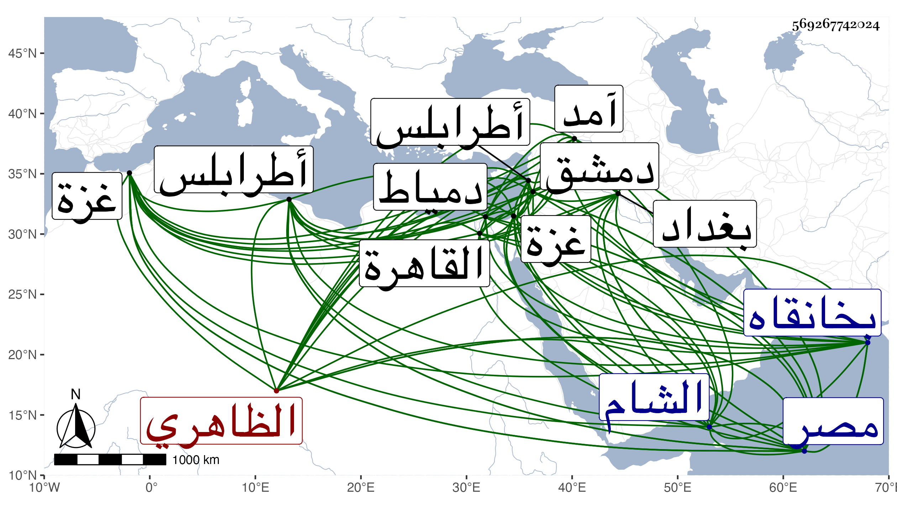

0902Sakhawi.DawLamic.ITO20230111-ara1.EIS1600.569267742024
Biography ID: 569267742024
1048
سودون بن عبد الرحمن الظاهري برقوق . كان من خاصكيته ثم ترقى في أيام ابنه الناصر حتى صار مقدما ، ثم ولي نيابة غزة ثم أعيد إلى التقدمة في أيام تدبير شيخ ثم ولاه أيام سلطنته طرابلس ، ثم كان ممن خرج مع قايتباي المحمدي عن الطاعة فلما انكسر رفقاؤه فر إلى قرا يوسف صاحب بغداد ثم قدم على ططر حين كان بالبلاد الشامية مع المظفر بن المؤيد فأكرمه ثم جعله مقدما بالديار المصرية إلى أن استقر به الأشرف برسباي في الدوادارية الكبرى ثم في نيابة الشام سنة سبع وعشرين عوضا عن تنبك البجاسي والتقيا فقتل تنبك وانتصر المذكور ، وقدم القاهرة في أيام نيابته غير مرة ثم نقل إلى أتابكيتها ، وسافر وهو أتابك مصر مع الأشرف إلى آمد في محفة ذهابا وإيابا لضعفه وبعد رجوعه رسم له بالاقامة بطالا ثم أرسل لدمياط فكانت منيته بها في ذي الحجة سنة إحدى وأربعين ، وكان جليلا شجاعا مقداما عارفا سيوسا وافر الحرمة متجملا في ملبسه ومركبه مليح الوجه منور الشيبة حلو الكلام والمحاضرة نالته السعادة في نيابته لدمشق وطالت أيامه ، وعمر بها عدة أملاك بل أنشأ بخانقاه سرياقوس مدرسة بها خطبة ، وكان فراغه منها سنة ست وعشرين وخلف ابنة يقال إنها ليست بذاك أنفدت غالب أوقاف مدرسة أبيها ونحوها في الانهماك ونحوه وما ماتت حتى صارت عبرة من الحاجة والهيئة المزرية وكانت وفاتها في سنة اثنتين وتسعين رحمه الله وعفا عنها .
